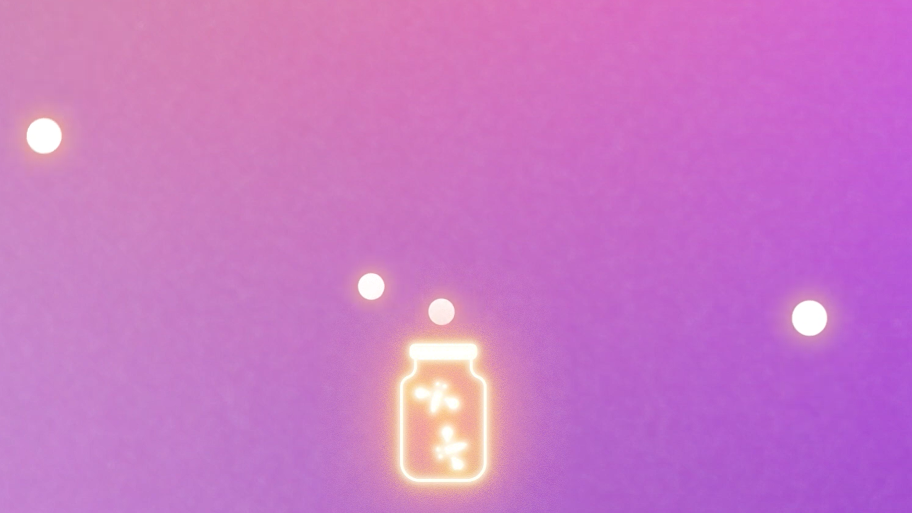

Duet
Video
Artistic Vision
We wanted to make a game where players could work together to make/do something creative! We decided to make a rhythm game inspired by the game Piano Tiles, where players have to tap tiles as they come down the screen in order to play the note. Although it’s typically a one-person game, we envisioned a new two-person version where the notes were split up and the players could work towards a shared accuracy score. We picked Twinkle Twinkle Star as our song because it’s a classic, recognizable, and can easily be divided into balanced notes for each player to play.

Our Roles & Design Decisions
Julia’s primary responsibilities were organizing the Twinkle Twinkle MIDI notes into playable tiles, splitting them, and working through the tile display and other user experience enhancements like replaying, countdown, etc.
My primary responsibilities involved implementing combined accuracy and feedback messages, including matching button presses to tiles to improve the user experience.
We worked together in-person the entire creation process to brainstorm together, connect the boards through Processing, troubleshoot issues, and playtest the game together to improve its timing and interface.
As for design decisions, we changed the screens from landscape to portrait so it would be easier for players to see the tiles coming down the screen, and also makes more sense with how the buttons on the ESP32 are oriented. Also, we simplified the interface over every iteration as we would play it. We originally had more information on the screen during gameplay, but after playing we realized we’d like it more if there were less information at the top. As players, we watched the tiles move more often than looking up to see what our accuracy was so we focused on getting the top part of the screen less cluttered. Additionally, while playing, we figured it would be more helpful if during the game, users could see when they had a perfect press, a good, a miss, or a stray, so they could improve their accuracy. Overall, our design decisions really took shape the more that we tested our game.
Technical Implementation
We built on the lab in class that synced the ESP32s. We kept the code that worked with team and player IDs and its wireless broadcast structure. Our game utilizes Processing, which reads MIDI, assigns tiles, manages song timing, judges presses, calculates accuracy, and generates instrument sounds. The first ESP32 board displays player one’s tiles and is the USB bridge between Processing and the wireless network. The other ESP32 receives display updates and sends button events. The boards render their own graphics and send tile positions often to manage song synchronization.
This portion of the code is crucial to our design: int t = millis() - startAt - INPUT_OFFSET_MS[p]; Note best = null; int distance = GOOD + 1; for (Note n : notes) { if (!n.judged && n.player == p && n.lane == lane && abs(n.time - t) < distance) { distance = abs(n.time - t); best = n; } }
This code matches each button press to the closest eligible tile by first calculating the current time relative to the start of the song (Twinkle Twinkle Little Star) and then searches for available tiles (same lane, correct player). When a tile is pressed its time is compared with the tile’s scheduled time in the song. This logic is the backbone of what allows two people to create a song that requires so much synchronization and timing.
Players’ end goal is a high combined accuracy, which is calculated by combined earned weight ÷ maximum weight for judged tiles × 100.
A challenge was adapting the Twinkle Twinkle MIDI arrangement to four buttons total. The file we found online has 216 pitched notes, some of which are simultaneous, so we utilized ChatGPT to help us clean up some tiles, changing the separate notes into group notes that had the same start times. It helped create playable tiles while retaining the correct notes.
Additionally, our game depends heavily on presses not sending twice or getting mixed up. Each press has a sequence number and is retried until acknowledged. Processing will ignore repeated IDs so different presses cannot count multiple times. However even with these efforts to help presses and song notes happen at the right times, there are many small delays that can probably affect the user experience.
AI Support
We used OpenAI ChatGPT-6 Astra for technical explanations, code development, debugging, and interface revisions. Examples of prompts we used include:
Create a minimal synchronization test for two ESP32 boards using the course’s ESP-NOW base architecture code and a Processing sketch over USB serial.
Change the song to twinkle twinkle little star and change the orientation so that it’s aligned with the buttons. Also, show a combined accuracy score instead of individual ones.
Accuracy should be centered on top, not score.
The AI helped generate Arduino and Processing code, and implement any visual feedback we provided.
Our own work included testing the game on both ESP32 boards and deciding how to improve the experience based on our playtests. We chose a portrait layout to align the tiles with the buttons, simplified the screen to show only combined accuracy, and requested brief feedback for Perfect, Good, Miss, and Stray presses. We also selected the song and customized the end-screen messages. Testing the AI-generated code on the physical boards helped us evaluate whether the controls, visuals, and sound worked together as intended.